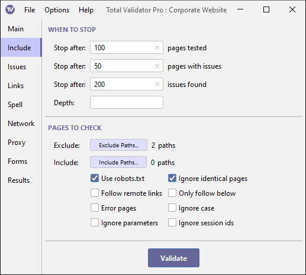

Documentation > Include options
These options control how many pages to test (first group), and which pages will be tested (second group).

When to stop
Stop after X pages tested
Leave this blank and Total Validator will test the Start page, all the pages linked from this page, and all the pages linked to those pages, until it can find no more pages to test.
See this FAQ entry if testing more than one website, or disconnected parts of the same site.
Alternatively, you can enter a number here to limit how many pages will be tested. If you have selected a CSS test then external style sheets are included in this count.
You often don't need to test an entire website, especially if most of the website uses templates and is essentially the same on every page. This means that just testing a portion of it should give you everything you need to correct the site, or give you confidence that it is still okay after deploying any changes.
The value that you enter here must be a whole number greater than zero, or leave the value blank to test all the pages linked from the Start page.
Stop after X issues
This option allows you to limit how many pages are tested by specifying the maximum number of issues to be reported before the testing stops. This is especially useful on large sites, where the same issues may be reported again and again. Instead of waiting for the whole site to be tested you can fix these common issues after testing only a few pages and later test the entire site.
Note that the number of issues reported could be slightly higher than the figure you enter, as all issues for the last tag tested will be reported.
Stop after X pages
This option allows you to stop the test when a certain number
of pages with issues has been reached. This is an
alternative to the Stop after X issues option, although both can be used
at the same time if required.
Depth
This option allows you to restrict how many folders 'below' the website root (or filesystem for local pages) to test, based on the number of '/' characters in the link, so if you just wish to test the top few levels of a website then enter a value here.
If you use this with the Only follow below option, the depth is relative to the Start page instead.
Pages to check
Exclude
This option allows you to exclude parts of the site by specifying one or more paths to ignore.
When you click the Exclude button a dialog appears allowing you to add, remove, and update a list of paths to exclude.
The paths that you enter here must start with '/'. Any pages that start with this path will then be ignored. You can use regular expression syntax here, but you must always start with '/' as the first character and note that .* is always automatically added to the end of whatever you enter.
When testing local pages on Windows, always use '/' and not '\'. Also, the same drive as the Start page will be automatically added, and all paths will be relative to the start of this drive.
You can combine this option with the Include option for more flexibility. For example, you could set a path to exclude of '/' to exclude everything except the Start page, and then use Include to specify exactly which paths should be tested. You can also use the robots.txt option at the same time for further fine-grained selection of what to test.
Note: When using this with the Only follow below option all paths you specify are relative to the Start page.
Include
If you specify some paths to exclude, or use Disallow within
the robots.txt file, you may
wish to override this to include some of those paths. Note that
it only makes sense for these include paths to be deeper than the paths
to exclude or the paths disallowed in the
robots.txt file.
When you click on the Include button a dialog appears allowing you to add, remove, and update a list of paths to include.
The paths that you enter here must start with a '/' and be more than just a single '/'. You can use regular expression syntax here, but you must always start with '/' as the first character and note that .* is always automatically added to the end of whatever you enter.
For example, if you specify an exclude path of /some_path/, and an include path of /some_path/sub_path/
then pages such as http://www.mysite.com/some_path/index.html will be excluded,
but pages such as http://www.mysite.com/some_path/sub_path/index.html will be
included (if you have a link to them from the pages that are tested).
Note: When using this with the Only follow below option all paths are relative to the Start page.
Use robots.txt
An alternative way of specifying which parts of a site to exclude is to add a standard
robots.txt file to a website.
Total Validator will use any rules marked for all user agents with a *, as well as
those specifically marked with a user agent of TotalValidator. For example:
User-agent: *
Disallow: /blogs
User-agent: TotalValidator
Allow: /support/
Disallow: /support/resources/
Total Validator supports all the features supported by
Google
including multiple Disallow: and Allow: statements in any order, wildcards and suffixes.
Note that the start page itself will always be tested even if the robots.txt file disallows it. This option can also be used in combination with the Exclude and Include options for fine-grained selection of what to test.
Also note that when used with the Follow remote links option the robots.txt files for each site on the Start page will be applied to that site only.
Ignore identical pages
In line with W3C standards, each unique URL on the site will be treated as a unique page or style sheet. If you have pages or style sheets which can be accessed using more than one URL, they will be tested separately and may appear more than once in the results.
If you select this option a checksum will be calculated for each page, and the page will only be tested if the checksum is unique, so pages with more than one URL will not be duplicated in the results.
Follow remote links
Normally Total Validator will ignore pages on remote sites. Selecting this option will cause it to ignore this restriction on the Start page only. Each link on the Start page is treated as if it is the Start page itself.
Use this option with care otherwise you may end up testing far more pages than intended. It is expected that in most cases this option will be used with a specially constructed Start page that references different parts of the same website or different websites. See Testing multiple sites for further details.
Only follow below
By default, Total Validator will follow all the links it finds and test those pages. Use this option to restrict it to just test pages 'below' the Start page so you can check just a portion of a website.
For example, if the Start page is http://www.mysite.com/some_path/index.html then only links that resolve to URLs that begin with
http://www.mysite.com/some_path/ will be tested.
Note: Using this option significantly modifies how the Exclude, Include, Follow remote links, and Depth options operate.
Error pages
When your web server returns an error status code, such as 404 (page not found), you may choose to return your own custom error page.
Select this option to test those pages as well.
Ignore case
The path component of URLs are case-sensitive, so mypage.html and MyPage.html could be completely different web
pages. However, because Windows uses a case-insensitive file system many web authors assume they point
to the same page. This is a mistake and should be corrected, and most web servers will generate
broken links where this happens. However, IIS masks this issue and so if you use IIS you may not
be aware of it.
This problem will make the site slower, affect your page rankings in search engines, and skew any web site analytics you run. It may also cause Total Validator to test the same page more than once and miss other pages altogether, so it is in your interest to correct this error as soon as possible.
If the web server is running on Windows and you suspect that you have this problem, then look for duplicated pages in the results and select this option to work around it until the site is fixed.
Ignore parameters
Some websites are constructed so that query parameters are dynamically added to links, creating different links each time the page is served. This is a problem for Total Validator, which treats these links as belonging to different pages because the URLs are different. This means that it will test the same page(s) again and again.
If this happens then select this option to prevent it. The URLs will be stripped of all query parameters before being processed. Note that this may mean that not all pages are tested, depending on how the query parameters are used.
Ignore session ids
Some websites are constructed so that session ids may be dynamically added to links. These links typically add the session id to the end using a semicolon ';' to separate them like this:
http://thewebsite.com/path/page.html;jsession=123456
This can sometime be a problem for Total Validator which may view two links to the same page as referring to different pages because the URLs are different. This means that it may test the same page(s) again and again.
If this happens then select this option to prevent it. The URLs will be stripped of the semicolon and everything following this up to the start of any query parameters, or to the end of the URL.